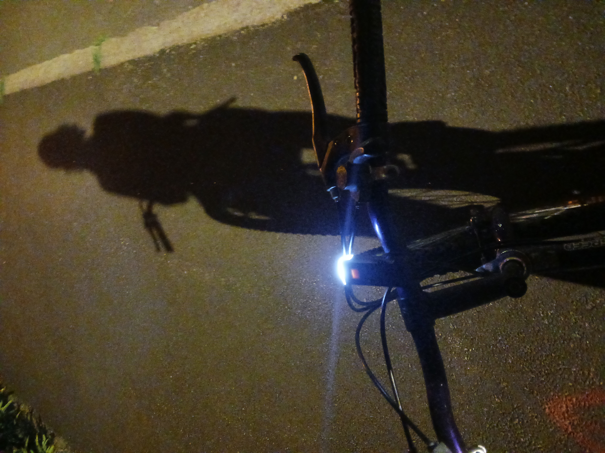

A ride-ality
December 1, 2024
Tonight: I want it to be different.
Instead of zigzagging nervously between the puddles,
the front wheel cycles fast and pierces cheerfully
every of them.
I want to get splashed.
To feel those bursts of dirty water on my face,
as if I could finally be touched by scraps of reality.
I stare at that necklace of water pearls
born out of my wheel repeatedly. Then its explosion,
as if each time, a part of me could be released from its own cuffs.
I break each puddle into shards.
They shine in the dark as if electrified.
What if they could short circuit my heart?
Then, it would have been a nice ride.
· · ·
Context & Notes
Biking through the rain that night, freed from my usual caution, I experienced a profound sense of liberation, as though I were reconnecting with reality and breaking through emotional inertia.
Comments
Don't hesitate to share a thought below.